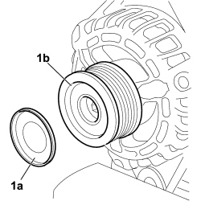
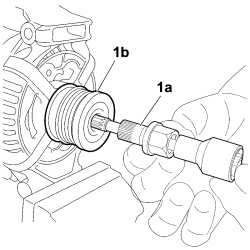
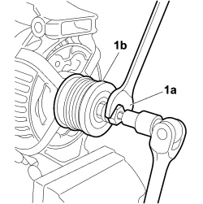
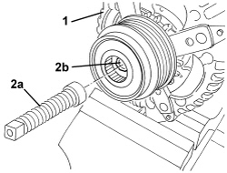
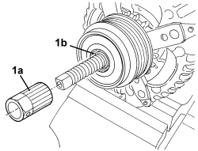
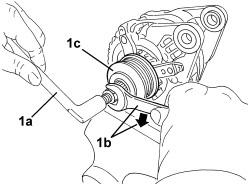

5530A30 ALTERNATOR PULLEY OR FAN - R+R WITH ALTERNATOR REMOVED
- Path
- Procedures > 55 ELECTRICAL EQUIPMENT > 5530 CURRENT GENERATION > 5530A ALTERNATOR AND COMPONENTS > 5530A30 ALTERNATOR PULLEY OR FAN - R+R WITH ALTERNATOR REMOVED
- Kind
- repair procedure (removal / refitting; the operation number is the code)
- Applies to
- engines: 2.2, 1.9 JTD 8v, 1.9 JTD 16v, 2.4 JTD 20v; all production periods
- Interactive page
- https://sloeber94.github.io/elrnDB-fCrm/en/#/194000716
Applies to: engines: 1.9 JTD 8v, 1.9 JTD 16v; all production periods
 Removing
Removing
 Refitting
Refitting- Turn the ignition key to the OFF position.
- Disconnect the negative battery terminal.
Description | Connector | |
|---|---|---|
BATTERY |
Op. 7055B54 UNDER ENGINE PROTECTION/GUARD - R.R.
Op. 7055B91 RIGHT FRONT WHEEL ARCH LINER - R.R.
Op. 7055B66 ENGINE COMPARTMENT DUST COVER IN RIGHT FRONT WHEEL ARCH - R.R.
Op. 5520C20 HEATER PLUGS CONTROL UNIT - R.R
- Take the alternator to the bench.
1. Use the appropriate tool to prise protective cover (1a) off pulley (1b).

Applies to: engines: 1.9 JTD 8v, 1.9 JTD 16v; all production periods
1. Using the appropriate tool, lock the rotation of the pulley using the tool (1a) and undo the fixing bolt (1b).

Applies to: engines: 1.9 JTD 8v, 1.9 JTD 16v; all production periods
Refitting
Removing- Check that the pulley and the pulley protective cover are undamaged.
- Fit the pulley to the alternator shaft.
- Tighten the pulley bolt, lock rotation using the appropriate tool and tighten to the specified torque.
- Fit the protective cover to the pulley.
Op. 5520C20 HEATER PLUGS CONTROL UNIT - R.R
Op. 7055B66 ENGINE COMPARTMENT DUST COVER IN RIGHT FRONT WHEEL ARCH - R.R.
Op. 7055B91 RIGHT FRONT WHEEL ARCH LINER - R.R.
Op. 7055B54 UNDER ENGINE PROTECTION/GUARD - R.R.
- Reconnect the negative battery terminal.
Description | Connector | |
|---|---|---|
BATTERY |
Applies to: engines: 2.2; all production periods
Removing
Refitting- Position the alternator on the bench and secure in a vice.
1. Fit tool (1a) into the splined seat of pulley (1b) and into the pulley bolt torque wrench seat.
Tool | Description | Function |
|---|---|---|
2.000.010.400 | Counter-torque | Dismantling pulley |

Applies to: engines: 2.2; all production periods
1. Use a fixed wrench (1a) to prevent pulley (1b) from turning, unscrew the bolt and remove the pulley from the alternator shaft.

Applies to: engines: 2.2; all production periods
Refitting
Removing- Check that the pulley and the pulley protective cover are undamaged.
- Fit the pulley to the alternator shaft.
- Tighten the pulley bolt, lock rotation using the appropriate tool and tighten the bolt.
Tool | Description | Function |
|---|---|---|
2.000.010.400 | Counter-torque | Dismantling pulley |
Applies to: engines: 2.4 JTD 20v; all production periods
Removing
Refitting1. Place the alternator in a vice, as shown in the diagram.
2. Position the tool (2a) with a recessed hexagonal reference on the hexagonal catch (2b).
Tool | Description | Function | Validity |
|---|---|---|---|
2000013800 | Tool with hexagonal mark | Alternator pulley extraction |

Applies to: engines: 2.4 JTD 20v; all production periods
1. Fit the ribbed bush tool (1a) in the housing (1b).
Tool | Description | Function | Validity |
|---|---|---|---|
1870785000 | Multi-tooth spanner | Removing-refitting alternator pulley |

Applies to: engines: 2.4 JTD 20v; all production periods
1. Using the reaction tool (1a) and a spanner (1b), undo the pulley (1c) (left hand thread).
Tool | Description | Function | Validity |
|---|---|---|---|
1854014000 | Reaction spanner | Alternator pulley extraction |

Applies to: engines: 2.4 JTD 20v; all production periods
Refitting
Removing- Check that the pulley is not damaged.
- Tighten the pulley in place (left hand thread).
- Using the tools and a torque wrench, tighten the pulley to the recommended torque.
Tool | Description | Function | Validity |
|---|---|---|---|
2000013800 | Tool with hexagonal mark | Alternator pulley extraction |
Tool | Description | Function | Validity |
|---|---|---|---|
1870785000 | Multi-tooth spanner | Removing-refitting alternator pulley |
Tool | Description | Function | Validity |
|---|---|---|---|
1854014000 | Reaction spanner | Alternator pulley extraction |
Component | Fastening | dia | Value (daNm) | Validity |
|---|---|---|---|---|
Alternator pulley | - | - | 0.85 |